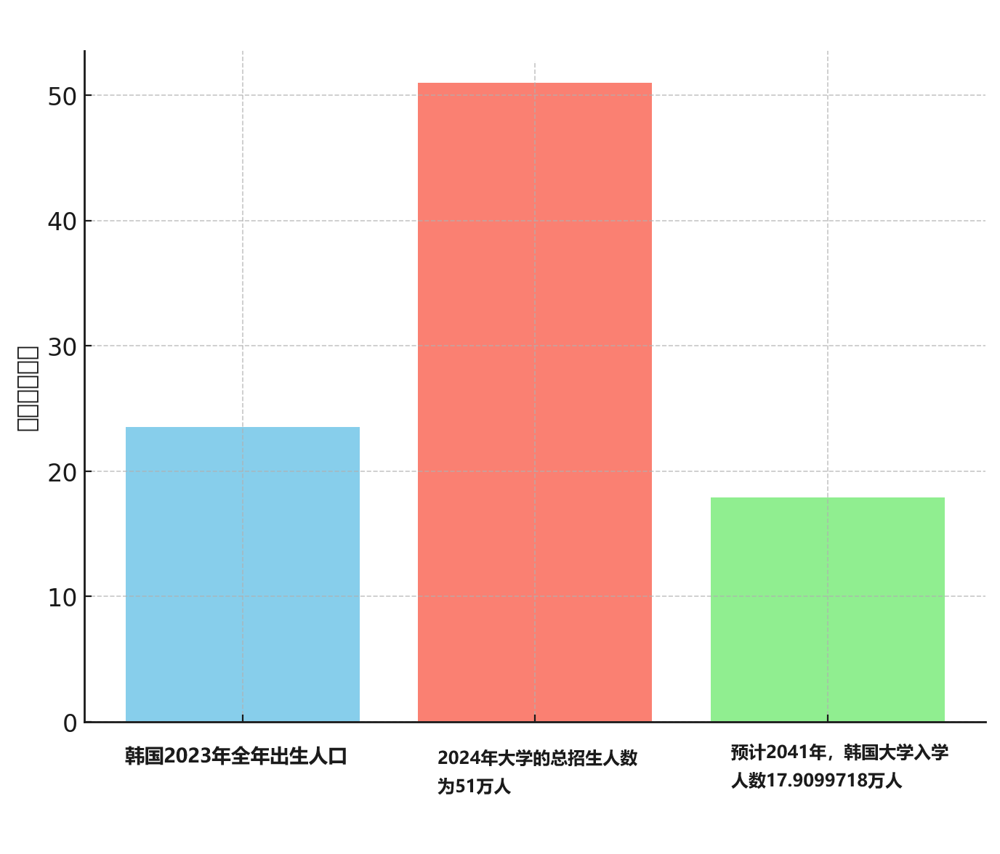

大学什么时候倒闭
大学倒闭是必然的
看到日本和韩国的现状，我们可以知道，大学倒闭是必然的。
日本告急，突发警告！超200所大学可能倒闭，这些大学已宣布停止招生
根据上一篇文章 老龄化社会的描述词
我们可以大致了解一个国家的老龄化程度是怎样的。
日本，30.1% （65岁以上人口比例），相当于100岁的人
韩国，16.5%，相当于63岁
台湾，18.5%，相当于68岁
为了避免大学倒闭
为了避免大学倒闭，我们有两种思路。
大学扩招。只要是个学生，就把ta招进大学去上学。
这种方法的优点： 延缓就业，降低青少年失业率（只要在读书就不用就业）。
缺点则有： 大学毕业证含金量降低。 扩招就算扩到博士，哪怕三十岁毕业，也是要就业的，这种方法治标不治本。让其中一些大学倒闭。
大学扩招
我们来探讨一下方法一，大学扩招。
在上一篇文章 人口红利何时结束，我们可以知道2024年
大学生数量占比出生人口为71.58%。
意思是2022年出生的1647万人，其中有1179万上了大学。（不好意思，我这里写错了。这1179万大学生里不仅有22年前出生的婴儿，还包含前几年出生的复读生、研究生）
那么问题来了，71.58% 还有多少提升空间呢？ 最多最多就是提升到100%， 把每一个孩子，不管是自闭症、智障都送进大学。但这又有什么意义呢？
因此大学生占比是有限的，不能无尽的提升。
韩国大学毕业生比例全世界第一
参考韩国的情况
韩国高等教育入学率76.2%
韩国统计厅国家统计门户网站（KOSIS）和微型数据进行分析结果显示,2023年大学、研究生等高等教育机构入学率达到76.2%，创历史新高。
韩国全体就业者2841.6万人中，大学以上学历达1436.1万人，占全体的50.5%。
根据全球各个国家受教育程度排名
得知韩国完成高等教育的25至34岁人群比例是世界第一，为69%。中国为36%
韩国大学生人口和出生人口倒挂的现象

韩国2023年全年出生人口为23.5039万人
截至2024学年，四年制大学的招生名额为196所大学的344，296名学生，132所专科学校的名额为166，588所学生，
328所大学的总名额为510，884名学生。
大学的总招生人数为51万人，而出生人口只有23.5万人。也就是说在招生比例不变的情况下，
23.5/51 = 0.46078
韩国20年后，一半以上的大学都要倒闭。
已经倒闭的韩国大学
https://www.youtube.com/watch?v=34y_PxGAgbE
新生不足导致的大学倒闭开始了——江原观光大学。
迄今为止，大学倒闭的主要原因大多是财团及成员的腐败等问题，但未来的大学倒闭则更有可能因为新生不足导致运营困难而发生。或许，宣告这种倒闭原因转换开始的江原观光大学，展示了由于韩国低出生率和地区不均衡所引发的新生不足问题的开端。
2024年2月29日关闭的江原观光大学。
通过回顾已经关闭的江原观光大学，探讨现在的韩国以及未来韩国的发展方向。
https://www.youtube.com/watch?v=wBEOZXrZWWE
学龄人口减少，加上法人腐败和经营不善，导致忠南地区的大学纷纷关门。
在这种情况下，许多大学在关闭后长期未能找到利用方案，变成了废弃的建筑物，我们对此进行了采访。
未来，几十所大学相继关闭的情况将不可避免，而这种损失将全部由地方社会承担，这使得问题变得更加严重。
我是金镇锡记者。
▶ 欢迎提交您的宝贵线索。
线索提交页面 - http://www.tjb.co.kr/sub0305/news/rep…
卡通ID: TJBTBOB
邮箱: tjbnews@tjb.co.kr
电话: 080-987-5555 / 传真: 042-285-5813
- 您也可以提交文件、照片、视频等。
▶ TJB 大田·忠南·世宗新闻全集： http://www.tjb.co.kr/sub0301
▶ 订阅TJB YouTube频道：https://www.youtube.com/c/tjbnews?sub…
ⓒ TJB 大田广播公司，禁止未经许可转载和再发布
禁止在线内容的部分摘录、商业使用等未经授权的使用。
*感兴趣的新闻可以添加到播放列表、稍后观看或分享哦~ ^^
中国大学生人口和出生人口倒挂的现象
2023年，中国出生人口903万人
2021年，普通高校招生数1118.9677万人，研究生招生数117.6526万人。合计1236.6203万人。
假设18年后，大学录取率为80%，那么大学录取人数为722.4万人。
下跌了(1236.6203-722.4) / 1236.6203 = 41.58%

中国的老龄化程度
目前中国的老龄化程度是14.2%, 相当于60岁的人
预计中国65岁以上老年人占比20%左右, 相当于76岁的人 （参考韩国，16.5%；台湾，18.5%）此时大学开始纷纷倒闭。
（ 20% - 14.2% ） * 14.12亿 = 0.81896 亿 = 8千万189.6 人
2029年
2024年，60岁的人出生于1964年。 1964年的出生人口为2414万人。
2024年，61岁的人出生于1963年。 出生人口为2787万
2024年，62岁的人出生于1962年。 出生人口为2092万
2024年，63岁的人出生于1961年。 出生人口为1141万
2024年，64岁的人出生于1960年。 出生人口为1468万
2019年死亡人口998万人
2020年死亡人口997.6万
2021年死亡人口1014万人
2022年死亡人口1041万人
2023年死亡人口1110万人
由此可见，五年后的新增老人为2414+2787+2092+1141+1468 = 9902
5年中，死亡人数为5000万人。
2029年新增65岁以上老人9902-5000 = 4902 万人
2034年
2024年，59岁的人出生于1965年。 1965年的出生人口为2480万人。
2024年，58岁的人出生于1966年。 出生人口为2483万
2024年，57岁的人出生于1967年。 出生人口为2174万
2024年，56岁的人出生于1968年。 出生人口为2772万
2024年，55岁的人出生于1969年。 出生人口为2502万
2480 + 2483 + 2174 + 2772 + 2502 = 1 亿 2411 万人
1 亿 2411 万人 - 5000万 = 7411 万人
7411 万人 + 4902 万人 = 1亿2313万人
因为随着老龄化的加剧，死亡人口不会停留在1100万人/年，而是会上涨。
所以十年后，新增老年人不会是1亿2313万人，而是少于1亿2313万人。
在总人口不变的情况下，增长8千万189.6 人的老年人，中国65岁以上老年人占比将会达到20%左右
使用新生儿人口进行交叉验证
2014年的出生人口，20年后，2034年要开始上大学。
因此可以用2014年的出生人口，和2002年的出生人口做对比。
使用新生儿人口和老龄化程度进行交叉验证
2002年的出生人口1647万
2014年的出生人口1687万
2015年的出生人口1655万
2016年的出生人口1786万
2017年的出生人口1723万2018年的出生人口1523万2019年的出生人口1465万2020年的出生人口1202万
转折点在2018、2019、2020年，出生人口成了速滑梯道。在学生人口真正下降之前，学校就会有所反应。 而不是真正下降之后，才后知后觉的进行裁员。
总结
也就说十年2034年，大学开始准备倒闭。
2036年开始速降。 大学成了看谁跑得快的游戏。